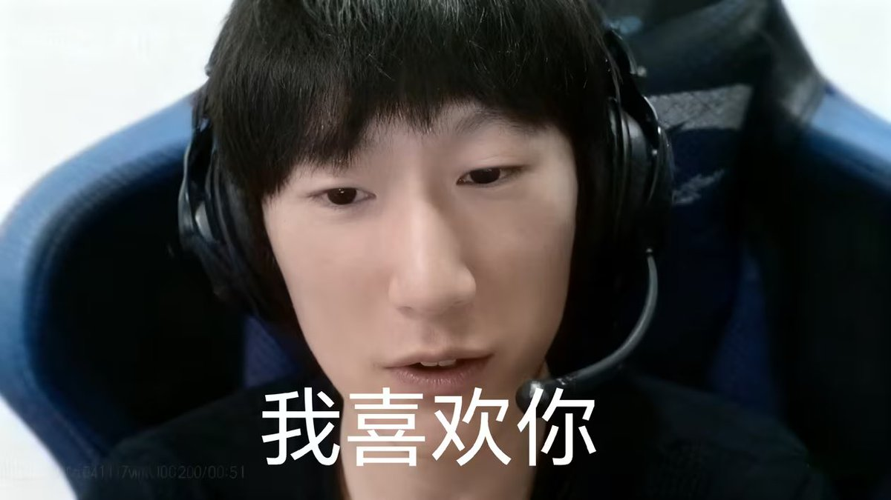

哦天哪，有人在网上同意我跟祂约会，我感觉太舒服了，我天我太缺爱了，感觉一个外貌好一点的给我拐走了，然后家里全归其他亲人管了
其实并不会被外貌好的拐走，因为我比较喜欢偏虚拟人物那样好看的，大概只有仿生机器人才能做到，当然真人能做到简直太好了
被视奸无疑可怕，我也希望我的爱人健康自由，不那么缺爱和痛苦，我渴望着纯洁的友谊式的爱情，不需要殉情般的深情，不需要病态的依恋，不需要控制与虐待，不需要利益的纠分与绑定，不需要童话的开头与结尾，希望是真心相爱，希望是真心且真诚的爱意，不是救赎的光芒，不是缺爱的依恋，不是为了赚到盆满钵满的利益，不是贵族一起逃离的童话，是真正的，纯洁的，纯粹的爱意，我不知道是否存在，但是我渴望着
天哪，反应过来就打了这么多字
其实并不会被外貌好的拐走，因为我比较喜欢偏虚拟人物那样好看的，大概只有仿生机器人才能做到，当然真人能做到简直太好了
被视奸无疑可怕，我也希望我的爱人健康自由，不那么缺爱和痛苦，我渴望着纯洁的友谊式的爱情，不需要殉情般的深情，不需要病态的依恋，不需要控制与虐待，不需要利益的纠分与绑定，不需要童话的开头与结尾，希望是真心相爱，希望是真心且真诚的爱意，不是救赎的光芒，不是缺爱的依恋，不是为了赚到盆满钵满的利益，不是贵族一起逃离的童话，是真正的，纯洁的，纯粹的爱意，我不知道是否存在，但是我渴望着
天哪，反应过来就打了这么多字
